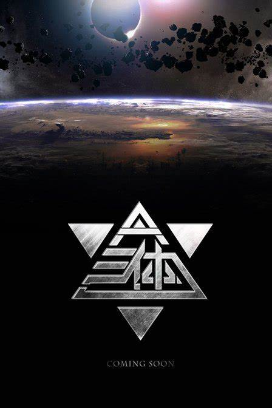

《三体》作品介绍
《三体》是刘慈欣创作的长篇科幻小说系列，由《三体》 、《三体 2：黑暗森林》 、《三体 3：死神永生》 组成。
小说讲述了地球人类文明和三体文明的信息交流、生死搏杀及两个文明在宇宙中的兴衰历程。
班级：给卓2401 姓名：武宇飞 学号：U202415248 联系方式：1372262636@qq.com
版权信息：基于《三体》相关内容展示，版权归刘慈欣及相关方所有

《三体》是刘慈欣创作的长篇科幻小说系列，由《三体》 、《三体 2：黑暗森林》 、《三体 3：死神永生》 组成。
小说讲述了地球人类文明和三体文明的信息交流、生死搏杀及两个文明在宇宙中的兴衰历程。
班级：给卓2401 姓名：武宇飞 学号：U202415248 联系方式：1372262636@qq.com
版权信息：基于《三体》相关内容展示，版权归刘慈欣及相关方所有